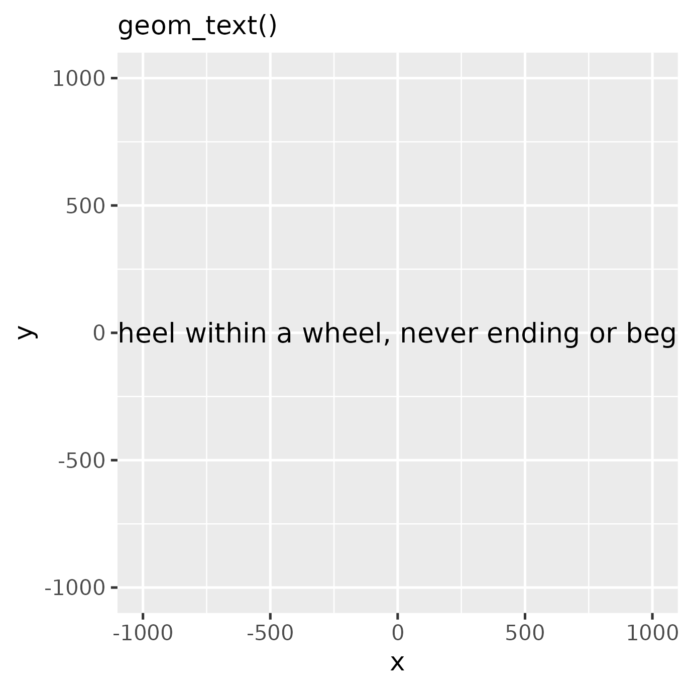

Text on a path
The goal of the geomtextpath package is to draw text on a curved path as an extension of the ggplot2 plotting library. Those already familiar with ggplot2 and the geom_path() and geom_text() geometries, can easily display a path or some text.
t <- seq(5, -1, length.out = 1000) * pi
spiral <- data.frame(
x = sin(t) * 1000:1,
y = cos(t) * 1000:1
)
rhyme <- paste(
"Like a circle in a spiral, like a wheel within a wheel,",
"never ending or beginning on an ever spinning reel"
)
p <- ggplot(spiral, aes(x, y)) +
coord_equal(xlim = c(-1000, 1000), ylim = c(-1000, 1000))
p + geom_path() + labs(subtitle = "geom_path()")
p + geom_text(
data = data.frame(x = 0, y = 0),
size = 4, label = rhyme
) + labs(subtitle = "geom_text()")
The geom_pathtext() extension follows these ggplot2 conventions and displays the path and the text by projecting the text along the curve.
p + geom_textpath(
size = 4, label = rhyme
) + labs(subtitle = "geom_textpath()")